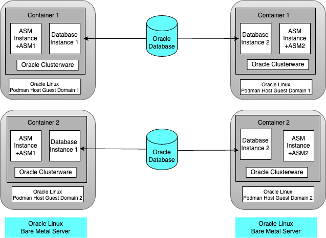
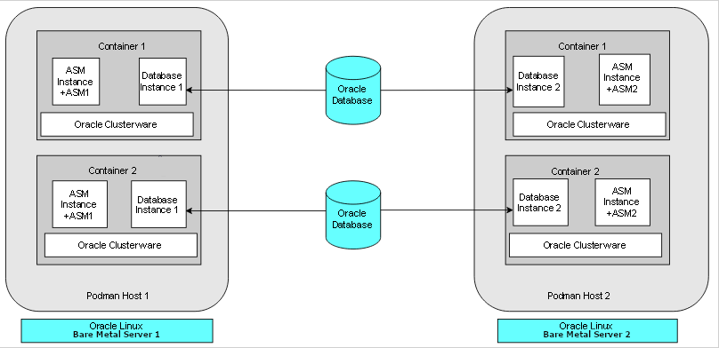
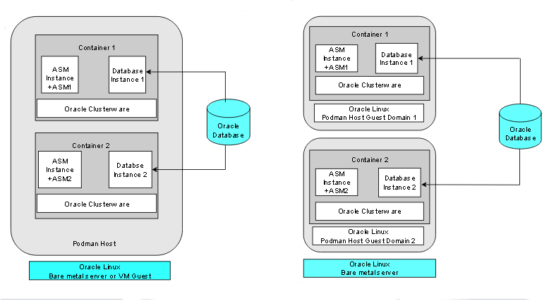

2 Target Configuration for Oracle RAC on Podman
The procedures in this document are tested for a 2-node Oracle RAC cluster running on two Linux host servers, and using block devices for shared storage.
- Overview of Oracle RAC on Podman
Starting with Oracle Database 19c (19.16), Oracle RAC is supported on Podman containers for production deployments. - Podman Host Server Configuration
When configuring your Podman host server, follow these guidelines, and see the configuration Oracle used for testing. - Podman Containers and Oracle RAC Nodes
Learn about the configuration used in this document, so that you can understand the procedures we follow. - Provisioning the Podman Host Server
You can provision the Linux server hosting Podman (the Podman host server) either on a bare metal (physical) server, or on an Oracle Linux Virtual Machine (VM). - Podman Host Preparation
Before you can install Oracle Grid Infrastructure and Oracle Real Application Clusters, you must install Podman. - Build the Podman Image for Oracle RAC on Podman
To build Oracle Real Application Clusters (Oracle RAC) installation images, you create an image directory, create an image, and ensure the Podman host has connectivity to the Internet. - Provision Shared Devices for Oracle ASM
Ensure that you provision storage devices for Oracle Automatic Storage Management (Oracle ASM) with clean disks. - Create Public and Private Networks for Oracle RAC on Podman
Use this example to see how to configure the public network and private networks for Oracle Real Application Clusters (Oracle RAC). - Options to Consider Before Deployment
Before deployment of Oracle RAC on Podman, review network and host configuration options. - Create the Oracle RAC Containers
To create Oracle Real Application Clusters (Oracle RAC) containers, runPodman createcommands similar to these examples. - Connect the Network and Start the Podman Containers
Before you start the containers, you set up the public and private networks, and assign the networks to the Oracle RAC Containers. - Download Oracle Grid Infrastructure and Oracle Database Software
Download the Oracle Database and Oracle Grid Infrastructure software from the Oracle Technology Network, and stage it. - Deploy Oracle Grid Infrastructure and Oracle RAC in the Containers
After you prepare the containers, complete a standard Oracle Grid Infrastructure and Oracle Real Application Clusters (Oracle RAC). - Options to Consider After Deployment
After deployment of Oracle RAC in containers, you can choose to add more or remove Oracle Real Application Clusters (Oracle RAC) nodes, or install different releases of Oracle RAC. - Known Issues for Oracle RAC on Podman
When you deploy Oracle Real Application Clusters (Oracle RAC) on Podman containers, if you encounter an issue, check to see if it is a known issue. - Additional Information for Oracle RAC on Podman Configuration
This information can help to resolve issues that can arise with Oracle Real Application Clusters (Oracle RAC) on Podman.
Overview of Oracle RAC on Podman
Starting with Oracle Database 19c (19.16), Oracle RAC is supported on Podman containers for production deployments.
To prevent a single host causing complete downtime in a production environment, distribute Oracle RAC nodes across Podman hosts running on different physical servers. It is possible to configure Oracle RAC on Podman hosts running on same physical server for test and development environments.
The following figure shows a production configuration, in which there are two containers on one host, in separate guest domains, and two containers on a second host, also with two separate guest domains, with a high availability storage and network configuration:

Description of the illustration prod-config-podman.png
The following figure shows another production deployment, in which containers are located in different Podman hosts on separate hardware servers, with a high availability storage and network configuration:

Description of the illustration bare-metal-server-prod-podman.png
The following figure shows two examples of typical test and development deployments. The example on the left side shows a Podman host in which the cluster member nodes are containers in the same Podman host. The example on the right shows two Podman hosts on the same hardware server, with separate containers on each host.

Description of the illustration test-dev-podman.png
For virtual test and development clusters, you can use two or more Podman containers as nodes of the same cluster, running on only one Oracle Linux Podman host, because high availability is not required for testing.
Parent topic: Target Configuration for Oracle RAC on Podman
Podman Host Server Configuration
When configuring your Podman host server, follow these guidelines, and see the configuration Oracle used for testing.
The Podman server must be sufficient to support the intended number of Podman containers, each of which must meet at least the minimum requirements for Oracle Grid Infrastructure servers hosting an Oracle Real Application Clusters node. Client machines must provide sufficient support for the X Window System (X11) remote display interactive installation sessions run from the Oracle RAC node. However, if you use noninteractive (silent) installation, then the client machine is not needed.
For details about Podman storage requirements, see "Setting Storage Configuration Options" at the following URL:
Oracle Linux Podman User's Guide
In the example configuration in this document, we use the following configuration. Change host and container names to match your configuration.
Oracle RAC Node 1
- Podman host:
podman-host-1 - Container:
racnode1 - CPU Core IDs: 0 and 1
- RAM: 16 GB
- Swap memory: 16 GB
- Operating system disk:
You can use any supported storage options for Oracle Grid Infrastructure. Ensure that your storage has at least the following available space:
- Root (
/): 40 GB /scratch: 80 GB (the Podman host directory, which will be used for/u01to store Oracle Grid Infrastructure and Oracle Database homes)/var/lib/containers: 100 GBxfs
- Root (
- Podman version: 4.0.2
- Linux: Oracle Linux Server release 8.5, with kernel
5.4.17-2136.300.7.el8uek.x86_64
Oracle RAC Node 2
- Podman host:
podman-host-2 - Container:
racnode2 - CPU Core IDs: 0 and 1
- RAM: 16 GB
- Swap memory: 16 GB
- Operating system disk:
You can use any supported storage options for Oracle Grid Infrastructure. Ensure that your storage has at least the following available space:
- Root (
/): 40 GB /scratch: 80 GB (the Podman host directory, which will be used for/u01to store Oracle Grid Infrastructure and Oracle Database homes)/var/lib/containers: 100 GBxfs
- Root (
- Podman version: 4.0.2
- Linux: Oracle Linux Server release 8.5, with kernel
5.4.17-2136.300.7.el8uek.x86_64
Block devices
You can use any supported storage options for Oracle Grid Infrastructure. Ensure that your storage has at least the following available space:
/dev/sdd (50 GB)/dev/sde (50 GB)
Related Topics
Parent topic: Target Configuration for Oracle RAC on Podman
Podman Containers and Oracle RAC Nodes
Learn about the configuration used in this document, so that you can understand the procedures we follow.
This document provides steps and commands to create Podman containers using the two-node configuration as an example that this guide provides. The configuration information that follows is a reference for that configuration.
The Podman containers in this example configuration were created on the Podman hosts
podman-host-1 and podman-host-2 for Oracle Real
Application Clusters (Oracle RAC):
Oracle RAC Node 1
- Container:
racnode1 - CPU core IDs: 0 and 1
- Memory
- RAM memory: 16 GB
- Swap memory: 16 GB
- Oracle Automatic Storage Management (Oracle ASM) Disks
/dev/asm-disk1/dev/asm-disk2
- Host names and IP addresses
racnode1, 10.0.20.150racnode1-vip, 10.0.20.160racnode1-priv, 192.168.17.150racnode-scan, 10.0.20.170/171/172- Domain:
example.info
-
The
racnode1Podman volumes are mounted using Podman host directory paths and appropriate permissions.To ensure that the mount is performed as a directory, each mount is specified using
-vor--volume. A volume consists of three fields, separated by colon characters (:). When you set up volumes, you must set the volume fields in the following order:source-path:target-path:options. For example:# podman container create ... --volume /boot:/boot:ro ... -name racnode1Note that
/bootmust bereadonlyinside the container. Also note that the paths inside the containers (/boot,/software/stage,u01, and/etc/localtime) are coming from the mounts on the Podman host (/boot:ro,/scratch/software/stage,/scratch/rac/cluster01/node1, and/etc/localtime)Each of the following volumes are mounted:
/boot: read-only (/boot:ro)/software/stageread-write (/scratch/software/stage)/u01read-write (/scratch/rac/cluster01/node1)/etc/localtimeread-only (/etc/localtime)
- Oracle Database configuration
- Release 19.16
- CDB name:
orclcdb - PDB name:
orclpdb - Instance:
orclcdb1 - SGA size: 3 GB
- PGA size: 2 GB
Oracle RAC Node 2
- Container:
racnode2 - CPU core IDs: 0 and 1
- Memory
- RAM memory: 16 GB
- Swap memory: 16 GB
- Oracle Automatic Storage Management (Oracle ASM) Disks
/dev/asm/disk1/dev/asm-disk2
- Host names and IP addresses
racnode2 10.0.20.151racnode2-vip 10.0.20.161racnode2-priv 192.168.17.151racnode-scan 10.0.20.170/171/172- Domain:
example.info
-
The
racnode2Podman volumes are mounted using Podman host directory paths and appropriate permissions.To ensure that the mount was performed as a directory, mounts are created for Podman using
-vor--volume. A volume consists of three fields, separated by colon characters (:). When you configure your volumes, you must set the volume fields in the following order:source-path:target-path:options. For example:# Podman container create ... --volume /boot:/boot:ro ... -name racnode2Each of the following volumes are created:
/boot: read-only (/boot:ro)/software/stageread-write (/scratch/software/stage)/u01read-write (/scratch/rac/cluster01/node2)/etc/localtimeread-only (/etc/localtime)
Note:
After this procedure is completed, to confirm mounts are set up, you can run the Podman command
podman container inspect racnode2. For more information about using this command to check mounts for your configuration, refer to the Podman documentation. - Oracle Database
- Instance:
orclcdb2
- Instance:
Parent topic: Target Configuration for Oracle RAC on Podman
Provisioning the Podman Host Server
You can provision the Linux server hosting Podman (the Podman host server) either on a bare metal (physical) server, or on an Oracle Linux Virtual Machine (VM).
Parent topic: Target Configuration for Oracle RAC on Podman
Podman Host Preparation
Before you can install Oracle Grid Infrastructure and Oracle Real Application Clusters, you must install Podman.
- Preparing for Podman Container Installation
Review the Oracle Podman Container documentation, and prepare your system for deployment. - Installing Podman Engine
In this example, the Podman engine is installed on an Oracle Linux Server release 8.5 with a version 5.4.17 kernel. - Allocate Linux Resources for Oracle Grid Infrastructure Deployment
Configure Linux resource allocations and configuration settings on the Podman host for Oracle Grid Infrastructure and the Oracle Real Application Clusters (Oracle RAC) container. - Enable Real Time Mode for Oracle RAC Processes
To populate the real-time CPU budgeting on machine restarts on Unbreakable Enterprise Linux Release 6 kernels (UEKR6), createoneshot systemdservice. - How to Configure Podman for SELinux Mode
To run Podman containers in an environment with SELinux enabled, you must configure an SELinux policy for the containers.
Parent topic: Target Configuration for Oracle RAC on Podman
Preparing for Podman Container Installation
Review the Oracle Podman Container documentation, and prepare your system for deployment.
Each container that you deploy as part of your cluster must satisfy the minimum hardware requirements of the Oracle Real Application Clusters (Oracle RAC) and Oracle Grid Infrastructure software. If you are planing to install Oracle Grid Infrastructure and Oracle RAC database software on data volumes exposed from your environment, then you must have at least 5 GB space allocated for the Oracle RAC on Podman image. However, if you are planning to install software inside the image, then you must have approximately 20 GB allocated for the Oracle RAC on Podman image.
Parent topic: Podman Host Preparation
Installing Podman Engine
In this example, the Podman engine is installed on an Oracle Linux Server release 8.5 with a version 5.4.17 kernel.
https://docs.oracle.com/en/operating-systems/oracle-linux/podman/
/var/lib/containers, which has an xfs file system.
After the setup, the Podman engine looks like the following example:
# podman info
host:
arch: amd64
buildahVersion: 1.24.1
cgroupControllers:
- cpuset
- cpu
- cpuacct
- blkio
- memory
- devices
- freezer
- net_cls
- perf_event
- net_prio
- hugetlb
- pids
- rdma
cgroupManager: systemd
cgroupVersion: v1
conmon:
package: conmon-2.1.0-1.module+el8.6.0+20665+a3b29bef.x86_64
path: /usr/bin/conmon
version: 'conmon version 2.1.0, commit: 9a942873287e0edbdc580ebee0fcd4b3735244f5'
cpus: 12
distribution:
distribution: '"ol"'
variant: server
version: "8.6"
eventLogger: file
hostname: podman-host-01
idMappings:
gidmap: null
uidmap: null
kernel: 5.4.17-2136.309.5.el8uek.x86_64
linkmode: dynamic
logDriver: k8s-file
memFree: 2094616576
memTotal: 41633333248
networkBackend: cni
ociRuntime:
name: runc
package: runc-1.0.3-2.module+el8.6.0+20665+a3b29bef.x86_64
path: /usr/bin/runc
version: |-
runc version 1.0.3
spec: 1.0.2-dev
go: go1.17.7
libseccomp: 2.5.2
os: linux
remoteSocket:
path: /run/podman/podman.sock
security:
apparmorEnabled: false
capabilities: CAP_NET_RAW,CAP_CHOWN,CAP_DAC_OVERRIDE,CAP_FOWNER,CAP_FSETID,CAP_KILL,CAP_NET_BIND_SERVICE,CAP_SETFCAP,CAP_SETGID,CAP_SETPCAP,CAP_SETUID,CAP_SYS_CHROOT
rootless: false
seccompEnabled: true
seccompProfilePath: /usr/share/containers/seccomp.json
selinuxEnabled: true
serviceIsRemote: false
slirp4netns:
executable: /bin/slirp4netns
package: slirp4netns-1.1.8-2.module+el8.6.0+20665+a3b29bef.x86_64
version: |-
slirp4netns version 1.1.8
commit: d361001f495417b880f20329121e3aa431a8f90f
libslirp: 4.4.0
SLIRP_CONFIG_VERSION_MAX: 3
libseccomp: 2.5.2
swapFree: 8571830272
swapTotal: 8589930496
uptime: 5h 22m 18.58s (Approximately 0.21 days)
plugins:
log:
- k8s-file
- none
- passthrough
- journald
network:
- bridge
- macvlan
- ipvlan
volume:
- local
registries:
search:
- container-registry.oracle.com
- docker.io
store:
configFile: /etc/containers/storage.conf
containerStore:
number: 2
paused: 0
running: 2
stopped: 0
graphDriverName: overlay
graphOptions:
overlay.mountopt: nodev,metacopy=on
graphRoot: /var/lib/containers/storage
graphStatus:
Backing Filesystem: xfs
Native Overlay Diff: "false"
Supports d_type: "true"
Using metacopy: "true"
imageCopyTmpDir: /var/tmp
imageStore:
number: 9
runRoot: /run/containers/storage
volumePath: /var/lib/containers/storage/volumes
version:
APIVersion: 4.0.2
Built: 1652749236
BuiltTime: Tue May 17 01:00:36 2022
GitCommit: ""
GoVersion: go1.17.7
OsArch: linux/amd64
Version: 4.0.2Parent topic: Podman Host Preparation
Allocate Linux Resources for Oracle Grid Infrastructure Deployment
Configure Linux resource allocations and configuration settings on the Podman host for Oracle Grid Infrastructure and the Oracle Real Application Clusters (Oracle RAC) container.
- Set Kernel Parameters on the Podman Host
To ensure that your kernel resource allocation is adequate, update the Linux/etc/sysctl.conffile. - Create Mount Points for the Oracle Software Binaries
As therootuser, create mount points for the Oracle software on local or remote storage. - Check Shared Memory File System Mount
Use this command to check the shared memory mount. - Configure NTP on the Podman Host
You must set up the usechronyimplementation of the Network Time Protocol (NTP) feature server on the Podman host for the Oracle Real Application Clusters (Oracle RAC) container. - Set Clock Source on the Podman Host
Oracle recommends that you set the clock source totscfor better performance in virtual environments (VM) on Linux x86-64. - Create a Directory to Stage the Oracle Software on the Podman Host
To stage Oracle Grid Infrastructure and Oracle Real Application Clusters software, create mount points, either on local or remote storage. - Using CVU to Validate Readiness for Oracle Podman Host
Oracle recommends that you use standalone Cluster Verification Utility (CVU) on your Podman host to help to ensure that the Podman host is configured correctly.
Parent topic: Podman Host Preparation
Set Kernel Parameters on the Podman Host
To ensure that your kernel resource allocation is adequate, update the Linux
/etc/sysctl.conf file.
- Log in as root
- Use the
vimeditor to update/etc/sysctl.confparameters to the following values:-
fs.aio-max-nr=1048576 -
fs.file-max = 6815744 -
net.core.rmem_max = 4194304 -
net.core.rmem_default = 262144 -
net.core.wmem_max = 1048576 -
net.core.wmem_default = 262144 -
vm.nr_hugepages=16384
-
- Run the following
commands:
# sysctl -a # sysctl –p
Note:
Becausevm.nr_hugepages enable HugePages in the Podman host,
Oracle recommends that you configure madvise for UEK7 and disable
Transparent HugePages for UEK6. For instructions on how to perform this task, refer
to "Setting Transparent HugePages to madvise" and "Disabling Transparent
HugePages" in Oracle Database
Installation Guide for Linux.
Related Topics
Create Mount Points for the Oracle Software Binaries
As the root user, create mount points for the Oracle
software on local or remote storage.
The mount points that you create must be available to all Podman hosts,
use interfaces such as iscsi, and mounted in the host at the mount
point, such as /scratch. Regardless of using local or remote
storage, this same mount point path must exist on each Podman host.
.
Note:
If a device is used to mount the/scratch file system in the
host, then the host's/etc/fstab file has an entry for
/scratch, and the operating system will generate a file system
mount service, scratch.mount, to automatically mount the file
system at host restarts.
As the root user, run commands similar to the
following:
On
podman-host-1:
# mkdir -p /scratch/rac/cluster01/node1podman-host-2:# mkdir -p /scratch/rac/cluster01/node2Check Shared Memory File System Mount
Use this command to check the shared memory mount.
/dev/shm) is mounted
properly with sufficient
size.
For example:
# df -h /dev/shm
Filesystem Size Used Avail Use% Mounted on
tmpfs 14G 168K 14G 1% /dev/shmThe df -h command displays the file system on which
/dev/shm is mounted, and also displays in GB the total
size, and the free size of shared memory.
Configure NTP on the Podman Host
You must set up the use chrony implementation of the
Network Time Protocol (NTP) feature server on the Podman host for the Oracle Real
Application Clusters (Oracle RAC) container.
Containers on Podman inherit the time from the Podman host. For this reason, the
chronyd service daemon must run on the Podman host, not inside the
Oracle RAC container. The chronyd daemon service replaces
ntpd for the management of NTP in Oracle Linux 8. For information
about how to set up the network time server, refer to the section describing how to
configure the chrony daemon service in Oracle Linux 8
Setting Up Networking.
Related Topics
Set Clock Source on the Podman Host
Oracle recommends that you set the clock source to tsc for
better performance in virtual environments (VM) on Linux x86-64.
Create a Directory to Stage the Oracle Software on the Podman Host
To stage Oracle Grid Infrastructure and Oracle Real Application Clusters software, create mount points, either on local or remote storage.
/stage/software.
As the root user, run commands similar to the following:
# mkdir -p /scratch/software/stage
# chmod a+rwx /scratch/software/stageUsing CVU to Validate Readiness for Oracle Podman Host
Oracle recommends that you use standalone Cluster Verification Utility (CVU) on your Podman host to help to ensure that the Podman host is configured correctly.
You can use CVU to assist you with system checks in preparation for creating a Podman container for Oracle Real Application Clusters (Oracle RAC), and installing Oracle RAC inside the containers. CVU runs the appropriate system checks automatically, and prompts you to fix problems that it detects. To obtain the benefits of system checks, you must run the utility on all the Podman hosts that you want to configure to host the Oracle RAC containers.
To obtain CVU, download Patch 30839369: Standalone CVU version 21.7 for container host July 2022 (Patch).
Note:
Ensure that you download the container host patch, which is different from the standard CVU distribution.Enable Real Time Mode for Oracle RAC Processes
To populate the real-time CPU budgeting on machine restarts on Unbreakable
Enterprise Linux Release 6 kernels (UEKR6), create oneshot systemd
service.
Note:
Do not run this procedure if you are using Unbreakable Linux Kernel Release 7 (UEKR7). To confirm which version you are running, run the following command:uname -rIf the
response is kernel-uek-5.4.17-2136.307.3 or later, then you are
on UEKR6. If the response is uek-5.15.0-3.60.5.1 or later, then
you are on UEKR7.
To run processes inside a container in real time mode for UEKR6, the
/sys/fs/cgroup/cpu,cpuacct/machine.slice/cpu.rt_runtime_us must
be populated with Real Time (RT) budgeting. The oneshot systemd
service will automatically populate the RT budgeting. This service needs to run only
after storage and networking for the Podman containers are available in the host.
Therefore, the property After= has the value of
multi-user.target as an umbrella dependency for the
service.
To enable the oneshot systemd service, you must first
create a Systemd initialization file,
/etc/systemd/system/podman-rac-cgroup.service with the
following content:
[Unit]
Description=Populate Cgroups with real time chunk on machine restart
After=multi-user.target
[Service]
Type=oneshot
ExecStart=/bin/bash -c "echo 950000 > /sys/fs/cgroup/cpu,cpuacct/machine.slice/cpu.rt_runtime_us && \
/bin/systemctl restart podman-restart.service"
StandardOutput=journal
CPUAccounting=yes
Slice=machine.slice
[Install]
WantedBy=multi-user.target
Next, to create and start oneshot systemd service, run
the following commands:
# systemctl daemon-reload
# systemctl enable podman-restart.service
# systemctl enable podman-rac-cgroup.service --nowParent topic: Podman Host Preparation
How to Configure Podman for SELinux Mode
To run Podman containers in an environment with SELinux enabled, you must configure an SELinux policy for the containers.
With Security-Enhanced Linux (SELinux), you must set a
policy to implement permissions for your containers. If you do not
configure a policy module for your containers, then they can end up
restarting indefinitely. You must add all Podman host nodes for your
cluster to the policy module rac-podman, by
installing the necessary packages and creating a type enforcement
file (designated by the .te suffix) to build the
policy, and load it into the system.
In the following example, the Podman host podman-host-1
is configured in the SELinux policy module
rac-podman:
[root@podman-host-1 ~]# dnf install selinux-policy-devel
[root@podman-host-1 ~]# dnf install setroubleshoot setools
[root@podman-host-1 ~]# cat /var/opt/rac-podman.te
module rac-podman 1.0;
require {
type kernel_t;
class system syslog_read;
type container_runtime_t;
type container_init_t;
class file getattr;
type container_file_t;
type lib_t;
type textrel_shlib_t;
type unlabeled_t;
class file read;
type bin_t;
class file { execmod execute map setattr };
}
#============= container_init_t ==============
allow container_init_t container_runtime_t:file getattr;
allow container_init_t bin_t:file map;
allow container_init_t bin_t:file execute;
allow container_init_t container_file_t:file execmod;
allow container_init_t lib_t:file execmod;
allow container_init_t textrel_shlib_t:file setattr;
allow container_init_t kernel_t:system syslog_read;
allow container_init_t unlabeled_t:file read;
[root@podman-host-1 ~]# cd /var/opt
[root@podman-host-1 ~]# make -f /usr/share/selinux/devel/Makefile rac-podman.pp
[root@podman-host-1 ~]# semodule -i rac-podman.pp
[root@podman-host-1 ~]# semodule -l | grep rac-pod
Repeat this process for podman-host-2.
After you complete these commands, change the file context of the host directory that will be used by the container:
[root@podman-host-1 ~]# semanage fcontext -a -t container_file_t /scratch/rac/cluster01/node1
[root@podman-host-1 ~]# restorecon -vF /scratch/rac/cluster01/node1
[root@podman-host-2 ~]# semanage fcontext -a -t container_file_t /scratch/rac/cluster01/node2
[root@podman-host-2 ~]# restorecon -vF /scratch/rac/cluster01/node2Parent topic: Podman Host Preparation
Build the Podman Image for Oracle RAC on Podman
To build Oracle Real Application Clusters (Oracle RAC) installation images, you create an image directory, create an image, and ensure the Podman host has connectivity to the Internet.
Note:
You can do this procedure on one Podman host, and use the image on the other Podman hosts, or repeat the same image build procedure on each Podman host.- Create the Podman Image Build Directory
To perform the Podman Image creation, use this procedure to create a directory for the build process. - Prepare Container Setup Script
To maintain device permissions, default route and host environment configuration, create a script to run automatically after container restarts to configure the container environment. - Create a Containerfile for Oracle RAC on Podman Image
To set up the Oracle Real Application Clusters (Oracle RAC) Podman file images, you must pull a base Oracle Linux image. - Create the Oracle RAC on Podman Image
To create the Oracle Real Application Clusters (Oracle RAC) image, set your Oracle Linux environment as required, and build an image from the Containerfile and context. - Use a Central Image Repository for Oracle RAC on Podman
You can chose to set up a container image repository for your Podman images.
Parent topic: Target Configuration for Oracle RAC on Podman
Create the Podman Image Build Directory
To perform the Podman Image creation, use this procedure to create a directory for the build process.
root, and enter the following commands:
# mkdir /scratch/image
# cd /scratch/imageParent topic: Build the Podman Image for Oracle RAC on Podman
Prepare Container Setup Script
To maintain device permissions, default route and host environment configuration, create a script to run automatically after container restarts to configure the container environment.
When you restart Podman containers, device permissions,
default routes, and /etc/hosts entries that were
previously configured for the containers are reset. To maintain your
configuration between Podman and Podman container restarts, use this
procedure to build a script that you can configure to run on each
container to set up the environment after restarts.
Because Oracle Real Application Clusters (Oracle RAC) uses
containers based on systemd, you can run the
container environment script on every restart by adding the script
to the /etc/rc.local folder inside the
container when you create the Oracle RAC slim image. After restarts,
the script you add to rc.local can ensure that your
Podman container environments are restored. Complete each of these
steps in sequence. Create the files and script in the Podman image
build directory, which in this example is
/stage/image.
/etc/rc.local. This step is described in the
section "Build Oracle RAC Database on Podman Image." After you add the line
to /etc/rc.local to call the
setupContainerEnv.sh script, if the Podman
Container is reset, then when a Podman container is started and
init loads, setupContainerEnv.sh
runs the following operations on every container restart:
- Sets the default gateway
- Sets the correct device permissions on ASM devices
- Sets up the
/etc/hostsfile. - Sets up the
/etc/resolv.conffile.
If you plan to deploy containers on multiple hosts,
then you must copy setupContainerEnv.sh on all the
Podman hosts where the image is built.
Note:
The setup script at the time of the image build, and
the content of the resolv.conf and
hostfile files, are embedded in the
Podman image during the build. That content may not be
applicable to the containers deployed using the same image
for other deployments, which will have different ASM disks
and network configuration. However, you can modify that
content after the containers are created and started, for
example by logging in the containers and editing the files
and script in /opt/scripts/startup.
Parent topic: Build the Podman Image for Oracle RAC on Podman
Create a Containerfile for Oracle RAC on Podman Image
To set up the Oracle Real Application Clusters (Oracle RAC) Podman file images, you must pull a base Oracle Linux image.
- Create a file named
Containerfileunder/scratch/image. - Open
Containerfilewith an editor, and paste the following lines into the file:# Pull base image # --------------- FROM oraclelinux:8 # Environment variables required for this build (do NOT change) # ------------------------------------------------------------- ## Environment Variables ## --- ENV SCRIPT_DIR=/opt/scripts/startup \ RESOLVCONFENV="resolv.conf" \ HOSTFILEENV="hostfile" \ SETUPCONTAINERENV="setupContainerEnv.sh" ### Copy Files # ---- COPY $SETUPCONTAINERENV $SCRIPT_DIR/ ### RUN Commands # ----- COPY $HOSTFILEENV $RESOLVCONFENV $SCRIPT_DIR/ RUN dnf install -y oracle-database-preinstall-19c systemd vim passwd openssh-server hostname xterm xhost vi policycoreutils-python-utils && \ dnf clean all && \ sync && \ groupadd -g 54334 asmadmin && \ groupadd -g 54335 asmdba && \ groupadd -g 54336 asmoper && \ useradd -u 54332 -g oinstall -G oinstall,asmadmin,asmdba,asmoper,racdba,dba grid && \ usermod -g oinstall -G oinstall,dba,oper,backupdba,dgdba,kmdba,asmdba,racdba,asmadmin oracle && \ cp /etc/security/limits.d/oracle-database-preinstall-19c.conf /etc/security/limits.d/grid-database-preinstall-19c.conf && \ sed -i 's/oracle/grid/g' /etc/security/limits.d/grid-database-preinstall-19c.conf && \ rm -f /etc/rc.d/init.d/oracle-database-preinstall-19c-firstboot && \ rm -f /etc/sysctl.conf && \ rm -f /usr/lib/systemd/system/dnf-makecache.service && \ echo "$SCRIPT_DIR/$SETUPCONTAINERENV" >> /etc/rc.local && \ chmod +x $SCRIPT_DIR/$SETUPCONTAINERENV && \ chmod +x /etc/rc.d/rc.local && \ setcap 'cap_net_admin,cap_net_raw+ep' /usr/bin/ping && \ sync USER root WORKDIR /root VOLUME ["/stage/software"] VOLUME ["/u01"] CMD ["/usr/sbin/init"] # End of the Containerfile
If you require additional packages for your application, then you can add them to the
RUN yum command.
Parent topic: Build the Podman Image for Oracle RAC on Podman
Create the Oracle RAC on Podman Image
To create the Oracle Real Application Clusters (Oracle RAC) image, set your Oracle Linux environment as required, and build an image from the Containerfile and context.
-
Log in as
root, and move to the directory for image creation that you have previously prepared:# cd /scratch/image -
Run the procedure for your use case:
- Your server is behind a proxy firewall:
- Run the following commands, where:
localhost-domainis the local host and domain for the internet gateway in your networkhttp-proxyis the HTTP proxy server for your network environmenthttps-proxyis the HTTPS proxy server for your network environment19.3with the19.16RU is the Oracle Database release that you are planning to install inside the container.
# export NO_PROXY=localhost-domain # export http_proxy=http-proxy # export https_proxy=https-proxy # export version=19.16 # podman build --force-rm=true --no-cache=true --build-arg \ http_proxy=${http_proxy} --build-arg https_proxy=${https_proxy} \ -t oracle/database-rac:$version-slim -f Containerfile . - Run the following commands, where:
- Your server is not behind a proxy firewall:
- Run the following commands, where
versionis the Oracle Database release that you are planning to install inside the Podman Container (for example, 19.16):
# export version=19.16 # podman build --force-rm=true --no-cache=true -t oracle/database-rac:$version-slim -f Containerfile . - Run the following commands, where
- Your server is behind a proxy firewall:
-
After the image builds successfully, you should see the image
oracle/database-rac:19.16-slimcreated on your Podman host:[root@podman-host--1 image]# podman images REPOSITORY TAG IMAGE ID CREATED SIZE localhost/oracle/database-rac 19.16-slim 9d5fed7eb7ba 7 seconds ago 396 MB container-registry.oracle.com/os/oraclelinux 8-slim 2ea85efcdb48 3 weeks ago 114 MB container-registry.oracle.com/os/oraclelinux 8 e6ca9618a97b 3 weeks ago 243 MB -
Save the image into a
tarfile, and transfer it to the other Podman host:# podman image save -o /var/tmp/database-rac.tar localhost/oracle/database-rac:19.16-slim # scp -i <ssh key for host podman-host-2> /var/tmp/database-rac.tar opc@podman-host-2:/var/tmp/database-rac.tar -
On the other Podman host, load the image from the tar file and check that it is loaded:
# podman image load -i /var/tmp/database-rac.tar # podman images REPOSITORY TAG IMAGE ID CREATED SIZE localhost/oracle/database-rac 19.16-slim 9d5fed7eb7ba 2 minutes ago 396 MB container-registry.oracle.com/os/oraclelinux 8 dfce5863ff0f 2 months ago 243 MB
Parent topic: Build the Podman Image for Oracle RAC on Podman
Use a Central Image Repository for Oracle RAC on Podman
You can chose to set up a container image repository for your Podman images.
If you have a container image repository on the network that reachable by the Podman hosts, then after the Oracle RAC on Podman image has been created on one Podman host, it can be pushed to the repository and used by all Podman hosts. For the details of the setup and the use of a repository, refer to the Podman documentation.
Parent topic: Build the Podman Image for Oracle RAC on Podman
Provision Shared Devices for Oracle ASM
Ensure that you provision storage devices for Oracle Automatic Storage Management (Oracle ASM) with clean disks.
Storage for the Oracle Real Application Clusters must use Oracle ASM, either on block storage, or on a network file system (NFS). Using Oracle Advanced Storage Management Cluster File System (Oracle ACFS) for Oracle RAC on Podman is not supported.
The devices you use for Oracle ASM should not have any existing file system. To overwrite any other existing file system partitions or primary boot records from the devices, use commands such as the following on one Podman host:
# dd if=/dev/zero of=/dev/sdd bs=1024k count=1024
# dd if=/dev/zero of=/dev/sde bs=1024k count=1024
In this example deployment, the Podman host devices
/dev/sdd and /dev/sde are at the same device
paths in both Podman hosts. and will be mapped in the containers as
/dev/asm-disk1 and /dev/asm-disk2. This
mapping is done in the container creation procedure "Create the Oracle RAC
Containers"
Parent topic: Target Configuration for Oracle RAC on Podman
Create Public and Private Networks for Oracle RAC on Podman
Use this example to see how to configure the public network and private networks for Oracle Real Application Clusters (Oracle RAC).
Before you start installation, you should create at least one public and two private networks in your containers. Oracle recommends that you create redundant private networks. Use this example as a model for your own configuration, but with the addresses you configure in your network domain. .
For development testing, the networks are created on private IP addresses, using the following configuration:
rac_eth0pub1_nw(10.0.20.0/24): Public networkrac_eth1priv1_nw(192.168.17.0/24): Private network 1rac_eth2priv2_nw(192.168.18.0/24): private network 2
Other examples that follow in this publication use these network names and addresses.
To set up the public network using a parent gateway interface in the
Podman host, you must run Oracle RAC on Podman for multi-host, using either the
Podman MACVLAN driver, or the IPVLAN driver. Also,
the gateway interface that you use must be one to which the domain name servers
(DNS) where you have registered the single client access names (SCANs) and host
names for Oracle Grid Infrastructure can resolve. For our example, we used
macvlan for the public network, and also
macvlan for the Oracle RAC private network communication
crossing different Podman hosts.
In the network creation commands, the -o parent
parameter must specify the physical interface of the host to which the
macvlan interface should be associated and
--subnet specifies the subnet that is to be used for IP address
assignments.
When a parent interface is used for the public network, and that parent
interface itself is configured for the host to be on the host network subnet, the
--subnet option must correspond to the subnet associated with
the physical interface named with the -o parent parameter, and the
--gateway option must correspond to the gateway on the network
of the physical interface.
For more details on the commands and options, refer to the Podman Documentation.
There are two options for network configuration: Standard maximum transmission unit (MTU) networks, and Jumbo Frames MTU networks. To improve Oracle RAC communication performance, Oracle recommends that you enable Jumbo Frames for the network interfaces, so that the MTU is greater than 1,500 bytes. If you have Jumbo Frames enabled, then you can use a network device option parameter to set the MTU parameter of the networks to the same value as the Jumbo Frames MTU.
Example 2-1 Standard Frames MTU Network Configuration
Standard frames MTU networks are configured similar to the following:
# ip link show | egrep "eth0|eth1|eth2"
3: eth0: <BROADCAST,MULTICAST,UP,LOWER_UP> mtu 1500 qdisc fq_codel state UP mode DEFAULT group default qlen 1000
4: eth1: <BROADCAST,MULTICAST,UP,LOWER_UP> mtu 1500 qdisc fq_codel state UP mode DEFAULT group default qlen 1000
5: eth2: <BROADCAST,MULTICAST,UP,LOWER_UP> mtu 1500 qdisc fq_codel state UP mode DEFAULT group default qlen 1000# podman network create -d macvlan --subnet=10.0.20.0/24 --gateway=10.0.20.1 -o parent=eth0 rac_eth0pub1_nw
# podman network create -d macvlan --subnet=192.168.17.0/24 -o parent=eth1 --disable-dns --internal rac_eth1priv1_nw
# podman network create -d macvlan --subnet=192.168.18.0/24 -o parent=eth2 --disable-dns --internal rac_eth2priv2_nwExample 2-2 Jumbo Frames MTU Network Configuration
Jumbo frames MTU networks are configured similar to the following:
[podman-host-01 ~]$ ip link show | egrep "eth0|eth1|eth2"
3: eth0: <BROADCAST,MULTICAST,UP,LOWER_UP> mtu 9000 qdisc fq_codel state UP mode DEFAULT group default qlen 1000
4: eth1: <BROADCAST,MULTICAST,UP,LOWER_UP> mtu 9000 qdisc fq_codel state UP mode DEFAULT group default qlen 1000
5: eth2: <BROADCAST,MULTICAST,UP,LOWER_UP> mtu 9000 qdisc fq_codel state UP mode DEFAULT group default qlen 1000If the MTU on each interface is set to 9000, then you can then run the following commands on each Podman host to extend the maximum payload length for each network to use the entire MTU:
# podman network create -d macvlan --subnet=10.0.20.0/24 --gateway=10.0.20.1 -o mtu=9000 parent=eth0 -o rac_eth0pub1_nw
# podman network create -d macvlan --subnet=192.168.17.0/24 -o parent=eth1 -o mtu=9000 --disable-dns --internal rac_eth1priv1_nw
# podman network create -d macvlan --subnet=192.168.18.0/24 -o parent=eth2 -o mtu=9000 --disable-dns --internal rac_eth2priv2_nwTo set up networks to run Oracle RAC in Podman containers, you can choose
to use more than one public network, and more than two private networks, or just a
single private network. If you choose to configure multiple networks, then to create
these networks, repeat the podman network create commands, using
the appropriate values for your network.
After the network creation, run the command podman
network ls. The result of this command should show networks created on
the Podman host similar to the following:
[root@podman-host--1 image]# podman network ls
NETWORK ID NAME DRIVER
2f259bab93aa podman bridge
0b560469e2e6 rac_eth0pub1_nw macvlan
85c5e0aa3969 rac_eth1priv1_nw macvlan
606a44672e40 rac_eth2priv2_nw macvlanParent topic: Target Configuration for Oracle RAC on Podman
Options to Consider Before Deployment
Before deployment of Oracle RAC on Podman, review network and host configuration options.
Before deployment, you can decide if you want to use one private network, or configure multiple private networks. You can also choose one of the following options:
- Multiple Podman hosts
- Multiple Podman bridges on a single Podman host
After you decide what network configuration option you want to use, complete the deployment procedure for your chosen configuration.
There are differences between Unbreakable Linux Kernel Release 6 (UEK6) and Unbreakable Linux Kernel Release 7 (UEK7). These will be explained where required.
Note:
In this document, we present the typical and recommended block device storage and network options. However, depending on your deployment topology and storage possibilities, you can consider other options that better fit the requirements of your deployment of Oracle RAC on Podman.
- Configuring NFS for Storage for Oracle RAC on Podman
If you want to use NFS for storage, then create an NFS volume for Oracle Grid Infrastructure and Oracle RAC files, and make them available to the Oracle RAC containers. - Multiple Private Networks Option for Oracle RAC on Podman
Before deployment, if you want to use multiple private networks for Oracle RAC on Podman, then change your Podman container creation so that you can use multiple NICs for the private interconnect. - Multiple Podman Hosts Option
If you use multiple Podman hosts, then use commands similar to this example to create the network bridges. - Multiple Podman Bridges On a Single Podman Host Option
If you cannot use theMACVLANdriver in your environment, then you can use this example to see how to create a Podman bridge on a single host.
Parent topic: Target Configuration for Oracle RAC on Podman
Configuring NFS for Storage for Oracle RAC on Podman
If you want to use NFS for storage, then create an NFS volume for Oracle Grid Infrastructure and Oracle RAC files, and make them available to the Oracle RAC containers.
Oracle RAC NFS mount options for binaries, Oracle Database data files and Oracle ASM diskgroups that are not used for OCR and voting disk files on Linux x86-64 are as follows:
rw,bg,hard,nointr,rsize=32768,wsize=32768,tcp,vers=3,timeo=600,actimeo=0For NFS mounts for the Oracle Clusterware OCR and voting disk files, add
noac to the mount options, and ensure that the OCR and voting
disk files are placed in ASM disk groups. :
rw,bg,hard,nointr,rsize=32768,wsize=32768,tcp,noac,vers=3,timeo=600,actimeo=0Example 2-3 NFS volume for Oracle Real Application Clusters Data Files
To create an NFS volume that you can use as storage for Oracle Database
data files, you can use this command, where nfs-server is your NFS server IP or hostname:
podman volume create --driver local \
--opt type=nfs \
--opt o=addr=nfs-server,rw,bg,hard,tcp,vers=3,timeo=600,rsize=32768,wsize=32768,actimeo=0 \
--opt device=:/oradata \
racstorageExample 2-4 NFS volume for Oracle Clusterware Files
To create an NFS volume that you can use as cluster shared storage, you
can use this command, where nfs-server is your NFS server IP or hostname:
For example, to create an NFS volume that you can use for Oracle Database
files, you can use this command, where nfs-server is your NFS server IP or hostname:
podman volume create --driver local \
--opt type=nfs \
--opt o=addr=nfs-server,rw,bg,hard,tcp,vers=3,timeo=600,rsize=32768,wsize=32768,actimeo=0,noac \
--opt device=:/crs \
crsstorageWhen you are creating a volume this case, you then provide the following
argument in the Podman podman container create command:
--volume racstorage:/oradata \
After these example commands are run, and the Podman container is created
with the volume argument, it can access the NFS file system at
/oradata when the container is up and running.
Multiple Private Networks Option for Oracle RAC on Podman
Before deployment, if you want to use multiple private networks for Oracle RAC on Podman, then change your Podman container creation so that you can use multiple NICs for the private interconnect.
If you want to use multiple private networks for Oracle Real Application
Clusters (Oracle RAC), then you must set the rp_filter tunable to
0 or 2. To set the rp_filter
value, you add the arguments for that tunable to the podman create
container command when you create your containers:
--sysctl 'net.ipv4.conf.private_interface_name.rp_filter=2'Based on the order of connection to the public and private networks that you previously configured, you can anticipate the private interface names that you define with this command.
For example in this guide the private network,
rac_eth1priv1_nw, is connected after the public network. If the
interface name configured for rac_eth1priv1_nw is
eth1, then a second private network connection on the interface
will be on the interface name eth2, as the Ethernet network
interface is assigned by the order of connection.
In this case, you then provide the following arguments in the
podman container create command:
--sysctl 'net.ipv4.conf.eth1.rp_filter=2' --sysctl 'net.ipv4.conf.eth2.rp_filter=2'. Parent topic: Options to Consider Before Deployment
Multiple Podman Hosts Option
If you use multiple Podman hosts, then use commands similar to this example to create the network bridges.
You must use the Podman MACVLAN driver with a parent adapter (using the
argument -o parent=adapter name)
for the connectivity to the external network.
# podman network create -d macvlan --subnet=10.0.20.0/24 --gateway=10.0.20.1 -o parent=eth0 rac_eth0pub1_nw
# podman network create -d macvlan --subnet=192.168.17.0/24 -o parent=eth1 rac_eth1priv1_nwNote:
If you prefer not to repeat the process of building an Oracle RAC on
Podman image on each Podman host, then you can create the Podman image on one
Podman host, and export that image to a TAR file. To use this option, run the
podman image save command on the Podman host where you
create the image, and then transfer the tar file to other
Podman hosts. These Podman hosts can then import the image by using the
podman image load command. For more information about these
commands, refer to the Podman documentation
Parent topic: Options to Consider Before Deployment
Multiple Podman Bridges On a Single Podman Host Option
If you cannot use the MACVLAN driver in your environment,
then you can use this example to see how to create a Podman bridge on a single host.
You can still create a Podman bridge in your environment, if
MACVLAN is not available to you. However, this bridge will not
be reachable from an external network. In addition, the Oracle RAC Podman containers
for a given cluster will be limited to be in the same Podman host.
Note:
To enable Jumbo Frame MTU on the bridge network, you can use the following option:
option "-o mtu=9000"
Log in as on the Podman host, and use commands similar to these:
# podman network create --driver=bridge --subnet=10.0.20.0/24 rac_eth0pub1_nw
# podman network create --driver=bridge --subnet=192.168.17.0/24 rac_eth1priv1_nwParent topic: Options to Consider Before Deployment
Create the Oracle RAC Containers
To create Oracle Real Application Clusters (Oracle RAC) containers, run
Podman create commands similar to these examples.
- Create Racnode1 Container with Block Devices
Use this procedure to create the first Oracle RAC container on Podman onpodman-host-1. - Create Racnode2 Container with Block Devices
Use this procedure to create the second Oracle Real Application Clusters (Oracle RAC) container on Podman onpodman-host-2.
Parent topic: Target Configuration for Oracle RAC on Podman
Create Racnode1 Container with Block Devices
Use this procedure to create the first Oracle RAC container on Podman on
podman-host-1.
To use this example on your Podman host, change the values for
--cpuset-cpu, --memory, and --device
--dns values to the correct values for your environment. Ensure that
the domain name servers (DNS) that you specify with --dns can
resolve the host names and single client access names (SCANs) that you plan to use
for Oracle Grid Infrastructure. To understand all of the options mentioned in the
following command, refer to the Podman documentation for the Podman version
installed on the host. You can also shut down the container gracefully with manual
commands. See "How to Gracefully Shut Down a RAC container" in this document.
Note:
If you are deploying Oracle RAC containers with UEKR7, then you must omit the following line in the Oracle RAC container creation command before--systemd=true \:
--cpu-rt-runtime 95000 \ Otherwise the container will fail to start
# podman create -t -i \
--hostname racnode1 \
--shm-size 2G \
--dns-search=example.info \
--dns=162.88.2.6 \
--device=/dev/sdd:/dev/asm-disk1:rw \
--device=/dev/sde:/dev/asm-disk2:rw \
--privileged=false \
--volume /scratch/software/stage:/software/stage \
--volume /scratch/rac/cluster01/node1:/u01 \
--cpuset-cpus 0-3 \
--memory 16G \
--memory-swap 32G \
--sysctl kernel.shmall=2097152 \
--sysctl "kernel.sem=250 32000 100 128" \
--sysctl kernel.shmmax=8589934592 \
--sysctl kernel.shmmni=4096 \
--sysctl 'net.ipv4.conf.eth1.rp_filter=2' \
--sysctl 'net.ipv4.conf.eth2.rp_filter=2' \
--cap-add=SYS_NICE \
--cap-add=SYS_RESOURCE \
--cap-add=NET_ADMIN \
--cap-add=AUDIT_WRITE \
--cap-add=AUDIT_CONTROL \
--restart=always \
--cpu-rt-runtime=95000 \
--ulimit rtprio=99 \
--systemd=true \
--name racnode1 \
oracle/database-rac:19.16-slim
Parent topic: Create the Oracle RAC Containers
Create Racnode2 Container with Block Devices
Use this procedure to create the second Oracle Real Application Clusters
(Oracle RAC) container on Podman on podman-host-2.
To use this example on your Podman host, change the values for
--cpuset-cpu, --memory, and --device
--dns values to the correct values for your environment. Ensure that the domain
name servers (DNS) that you specify with --dns can resolve the host names
and single client access names (SCANs) that you plan to use for Oracle Grid Infrastructure.
To understand all of the options mentioned in the following command, refer to the Podman
documentation for the Podman version installed on the host. You can also shut down the
container gracefully with manual commands. See "How to Gracefully Shut Down a RAC container"
in this document.
Note:
If you are deploying Oracle RAC containers with UEKR7, then you must omit the following line in the Oracle RAC container creation command before--systemd=true \:
--cpu-rt-runtime 95000 \ Otherwise the container will fail to start
# podman create -t -i \
--hostname racnode2 \
--shm-size 2G \
--dns-search=example.info \
--dns=162.88.2.6 \
--device=/dev/sdd:/dev/asm-disk1:rw \
--device=/dev/sde:/dev/asm-disk2:rw \
--privileged=false \
--volume /scratch/rac/cluster01/node2:/u01 \
--cpuset-cpus 0-3 \
--memory 16G \
--memory-swap 32G \
--sysctl kernel.shmall=2097152 \
--sysctl "kernel.sem=250 32000 100 128" \
--sysctl kernel.shmmax=8589934592 \
--sysctl kernel.shmmni=4096 \
--sysctl 'net.ipv4.conf.eth1.rp_filter=2' \
--sysctl 'net.ipv4.conf.eth2.rp_filter=2' \
--cap-add=SYS_NICE \
--cap-add=SYS_RESOURCE \
--cap-add=NET_ADMIN \
--cap-add=AUDIT_WRITE \
--cap-add=AUDIT_CONTROL \
--restart=always \
--cpu-rt-runtime=95000 \
--ulimit rtprio=99 \
--name racnode2 \
oracle/database-rac:19.16-slim
Parent topic: Create the Oracle RAC Containers
Connect the Network and Start the Podman Containers
Before you start the containers, you set up the public and private networks, and assign the networks to the Oracle RAC Containers.
- Assign Networks to the Oracle RAC Containers
Use these procedures to assign networks to each of the Oracle Real Application Clusters (Oracle RAC) nodes that you create in the Oracle RAC on Podman containers. - Start the Podman Containers and Connect to the Network
To enable your Oracle RAC on Podman environment, start the containers. - Adjust Memlock Limits
To ensure that the container total memory is included in calculating hostmemlocklimit, adjust the limit in containers after Podman containers are created.
Parent topic: Target Configuration for Oracle RAC on Podman
Assign Networks to the Oracle RAC Containers
Use these procedures to assign networks to each of the Oracle Real Application Clusters (Oracle RAC) nodes that you create in the Oracle RAC on Podman containers.
eth0 interface is public. The eth1
interface is the first private network interface, and the
eth2 interface is the second private network
interface.
On podman-host-1, assign networks to racnode1:
# podman network disconnect podman racnode1
# podman network connect rac_eth0pub1_nw --ip 10.0.20.150 racnode1
# podman network connect rac_eth1priv1_nw --ip 192.168.17.150 racnode1
# podman network connect rac_eth2priv2_nw --ip 192.168.18.150 racnode1
On podman-host-2, assign networks to
racnode2:
# podman network disconnect podman racnode2
# podman network connect rac_eth0pub1_nw --ip 10.0.20.151 racnode2
# podman network connect rac_eth1priv1_nw --ip 192.168.17.151 racnode2
# podman network connect rac_eth2priv2_nw --ip 192.168.18.151 racnode2Parent topic: Connect the Network and Start the Podman Containers
Start the Podman Containers and Connect to the Network
To enable your Oracle RAC on Podman environment, start the containers.
On podman-host-1
# systemctl start podman-rac-cgroup.service
# podman start racnode1On podman-host-2
# systemctl start podman-rac-cgroup.service
# podman start racnode2Parent topic: Connect the Network and Start the Podman Containers
Adjust Memlock Limits
To ensure that the container total memory is included in calculating host
memlock limit, adjust the limit in containers after Podman containers
are created.
memlock limit. The containers in this example
are racnode1 and racnode2.
-
Log in to
racnode1as root, and run the following commands:[root@racnode1 ~]# CONTAINER_MEMORY=$(cat /sys/fs/cgroup/memory/memory.limit_in_bytes) [root@racnode1 ~]# echo $CONTAINER_MEMORY 17179869184 [root@racnode1 ~]# echo $((($CONTAINER_MEMORY/1024)*9/10)) 15099494Replace the existing
memlocklimit values with the evaluated value:[root@racnode1 ~]# grep memlock /etc/security/limits.d/oracle-database-preinstall-19c.conf # oracle-database-preinstall-19c setting for memlock hard limit is maximum of 128GB on x86_64 or 3GB on x86 OR 90 % of RAM oracle hard memlock 222604311 # oracle-database-preinstall-19c setting for memlock soft limit is maximum of 128GB on x86_64 or 3GB on x86 OR 90% of RAM oracle soft memlock 222604311 [root@racnode1 ~]# sed -i -e 's,222604311,15099494,g' /etc/security/limits.d/oracle-database-preinstall-19c.conf [root@racnode1 ~]# grep memlock /etc/security/limits.d/oracle-database-preinstall-19c.conf # oracle-database-preinstall-19c setting for memlock hard limit is maximum of 128GB on x86_64 or 3GB on x86 OR 90 % of RAM oracle hard memlock 15099494 # oracle-database-preinstall-19c setting for memlock soft limit is maximum of 128GB on x86_64 or 3GB on x86 OR 90% of RAM oracle soft memlock 15099494 -
After modifying the
memlockvalue for theoracleuser, repeat the value replacement for a second limits configuration file for thegriduser. That file is/etc/security/limits.d/grid-database-preinstall-19c.conf.[root@racnode1 ~]# sed -i -e 's,222604311,15099494,g' /etc/security/limits.d/grid-database-preinstall-19c.conf - Log in as root to
racnode2, and repeat the procedure.
Parent topic: Connect the Network and Start the Podman Containers
Download Oracle Grid Infrastructure and Oracle Database Software
Download the Oracle Database and Oracle Grid Infrastructure software from the Oracle Technology Network, and stage it.
The way the containers are created, there is a Podman volume provisioned for the containers to access the staged download files. This line in the Podman container create commands creates the volume:
--volume /scratch/software/stage:/software/stage \Download the software to the Podman
host and stage it in the folder /scratch/software/stage so that in the
containers those files are accessible under /software/stage:
- Oracle Database 19c Grid Infrastructure (19.3) for Linux x86-64
(
LINUX.X64_193000_grid_home.zip) - Oracle Database 19c (19.3) for Linux x86-64
(
LINUX.X64_193000_db_home.zip) - Oracle Grid Infrastructure 19.16 GIRU, Patch 34130714
- Patch 34339952, patched on top of Oracle Grid Infrastructure 19.16
- Patch 32869666, patched on top of Oracle Grid Infrastructure 19.16
- Latest OPatch version (at the time of this release, p6880880_190000_Linux-x86-64.zip)
https://www.oracle.com/database/technologies/
Download the latest version of OPatch for Oracle Database.
Primary Note For OPatch (Doc ID 293369.1)Parent topic: Target Configuration for Oracle RAC on Podman
Deploy Oracle Grid Infrastructure and Oracle RAC in the Containers
After you prepare the containers, complete a standard Oracle Grid Infrastructure and Oracle Real Application Clusters (Oracle RAC).
Follow the directions in the platform-specific installation guides documentation to
install and configure Oracle Grid Infrastructure, and deploy Oracle Real Application
Clusters (Oracle RAC) 19c, and patch to Release Update (RU) 19.16 (Oracle Database 19.16
RU, Patch 3413364). Before you begin, download the latest Opatch release
(p6880880_190000_Linux-x86-64.zip). To apply the RU while
installing Oracle Grid Infrastructure, you can use the -applyRU flag.
To apply one-off patches while installing the software, you can use the flag
-applyOneOffs.
Options to Consider After Deployment
After deployment of Oracle RAC in containers, you can choose to add more or remove Oracle Real Application Clusters (Oracle RAC) nodes, or install different releases of Oracle RAC.
After completing your deployment, you can make changes to your Oracle RAC cluster on Podman:
Adding more Oracle RAC nodes
To add more Oracle RAC nodes on the existing Oracle RAC cluster running in Oracle RAC containers, you must create the containers in the same way as described in the section "Create the Oracle RAC Containers" in this document, but change the name of the container and the host name. For the other steps required, refer to the Oracle Grid Infrastructure documentation.
Parent topic: Target Configuration for Oracle RAC on Podman
Known Issues for Oracle RAC on Podman
When you deploy Oracle Real Application Clusters (Oracle RAC) on Podman containers, if you encounter an issue, check to see if it is a known issue.
For issues specific to Oracle RAC on Podman deployments, refer to My Oracle Support Doc ID 2885873.1.
Additional Information for Oracle RAC on Podman Configuration
This information can help to resolve issues that can arise with Oracle Real Application Clusters (Oracle RAC) on Podman.
- How To Recover an Interface Name for Oracle RAC
If a network interface name in the Oracle RAC node on the container disappears, and a different interface name is created, then use this procedure to recover the name. - How to Replace NIC adapters Used by Podman Networks
If you need to replace a network interface card (NIC) in a physical network outside of the Podman host, then use this procedure. - How to Clean Up Oracle RAC on Podman
If you need to remove Oracle Real Application Clusters (Oracle RAC) on Podman, then use this procedure. - Clean Up Podman Images with podman image prune
When you need to clean up Podman images on your Oracle RAC on Podman servers, you can use thepodman image prunecommand. - How to Ensure Availability of Oracle RAC Nodes After Podman Host Restarts
To ensure the availability of Oracle RAC Nodes after restarts, keep the Podman service enabled. - How to Gracefully Shut Down an Oracle RAC Container
To shut down gracefully Oracle Real Application Clusters (Oracle RAC) on Podman containers, use this procedure. - Guidelines for Podman Host Operating System Upgrades
Choose the operating system and server upgrade option that meets your availability requirements, and the Oracle Linux operating system requirements.
Parent topic: Target Configuration for Oracle RAC on Podman
How To Recover an Interface Name for Oracle RAC
If a network interface name in the Oracle RAC node on the container disappears, and a different interface name is created, then use this procedure to recover the name.
If a network for a container running Oracle Real Application Clusters (Oracle RAC) is disconnected, then reconnecting the same network can result in the network interface name in the Oracle RAC node to disappear. In the place of the previous network interface, a different interface name is created. When this scenario happens, the result is a network configuration that is inconsistent with the network configuration in Oracle Clusterware. If that network interface was the sole private interface for the cluster node, then that node can be evicted from the cluster.
To correct this problem, use this procedure to restore the network interface names on the containers to the same network interface names that were originally configured with Oracle Clusterware.
- Stop the container.
- Disconnect all of the networks.
- Reconnect the networks in the same order that you used when the container was created and configured for Oracle Grid Infrastructure installation.
- Restart the container.
How to Replace NIC adapters Used by Podman Networks
If you need to replace a network interface card (NIC) in a physical network outside of the Podman host, then use this procedure.
When an Oracle RAC public or private network is connected to a physical network outside of the Podman host, the corresponding Podman network uses the Macvlan mode of bypassing the Linux bridge, using a NIC adapter in the Podman host as the parent adapter.
After configuration, if you need to disconnect and replace a NIC card used with a network for a container running Oracle Real Application Clusters (Oracle RAC), then reconnecting the same network can result in the network interface name in the Oracle RAC node to disappear. In the place of the previous network interface name, a different interface name is created. When this scenario happens, the result is a network configuration that is inconsistent with the network configuration in Oracle Clusterware. If that network interface was the sole private interface for the cluster node, then that node can be evicted from the cluster.
To resolve that issue, use the following procedure:
-
Disable and then stop the Oracle Clusterware on the node:
# crsctl disable crs # crsctl stop crs - Disconnect the container from the network corresponding to the host
NIC being replaced. For example, where the container name is
mycontainer, and the network name ismypriv1, enter the following command:# podman network disconnect mycontainer mypriv1 - Replace the host NIC, and ensure that the new NIC is discovered, is available to
the host, and the host operating system device name is found. The NIC name can
be different from what it was previously. Depending on the host environment,
this step can require restarting the host operating system. For example, if the
NIC device name was previously
eth1, it can beeth3after replacement. - "Recreate the network using the NIC device name that you find. For
example, where the network name is
mypriv1, and the NIC that previously waseth1and now iseth3:# podman network rm mypriv1 # podman network create .... -o parent=eth3 mypriv1 - Stop the container.
- Disconnect the other networks from the container.
- Reconnect to the container all of the networks, using the same order that you used when originally creating the container. Connecting networks in the same order ensures that the interface names in the container are the same as before the replacement.
- Start the container, and verify that network interface names and IP addresses are as before.
- Restart and enable Clusterware in the
node:
# crsctl enable crs # crsctl start crs
How to Clean Up Oracle RAC on Podman
If you need to remove Oracle Real Application Clusters (Oracle RAC) on Podman, then use this procedure.
After you delete the container that you used for an Oracle RAC node, if
you recreate that container again, then it is not an Oracle RAC node, even though
you use the same volume for the mount point (/u01). To make the
container an Oracle RAC node again, use the node delete and node add procedures in
Oracle Grid Infrastructure Installation and Upgrade Guide for
Linux, and in Oracle Real Application Clusters
Administration and Deployment Guide.
Clean Up Podman Images with podman image prune
When you need to clean up Podman images on your Oracle RAC on Podman
servers, you can use the podman image prune command.
Objects on Podman generally are not removed unless you explicitly remove
them. To find out how to use the podman image prune commands to remove
Oracle RAC on Podman images, refer to the Podman documentation
Related Topics
How to Ensure Availability of Oracle RAC Nodes After Podman Host Restarts
To ensure the availability of Oracle RAC Nodes after restarts, keep the Podman service enabled.
By default, after the Podman Engine installation, the Podman service is enabled in the Podman host. That service must stay enabled to ensure the availability of the Oracle RAC nodes in the Podman host. If the Podman service is enabled, then when Podman hosts are restarted, whether due to planned maintenance or to unplanned outages, the Podman service is also restarted. The Podman service automatically restarts the containers it manages, so the Oracle RAC node container is automatically restarted. If Oracle Clusterware (CRS) is enabled for automatic restart, then Podman will also try to start up Oracle Clusterware in the restarted node.
How to Gracefully Shut Down an Oracle RAC Container
To shut down gracefully Oracle Real Application Clusters (Oracle RAC) on Podman containers, use this procedure.
Example 2-5 Graceful Shutdown by Stopping the CRS Stack and the Container
-
Stop the CRS stack inside the container. For example:
[root@racnode1 ~]# crsctl stop crs -
Stop the container from the host. For example:
# podman stop racnode1
Example 2-6 Graceful Shutdown by Stopping the Container from the Host with a Grace Period
To stop the container directly from the host using a grace period, the timeout in seconds must be sufficient for the graceful shutdown of Oracle RAC inside the container. For example:
# podman stop -t 600 racnode1Note:
If the container is able to shut down gracefully more quickly than the grace period in seconds that you specify, then the command completes before the grace period limit.Guidelines for Podman Host Operating System Upgrades
Choose the operating system and server upgrade option that meets your availability requirements, and the Oracle Linux operating system requirements.
You can patch or upgrade your Podman host operating system by patching or upgrading a new operating system on a server. In a multi- host configuration, you can upgrade your Podman host in rolling fashion. Because Oracle RAC on Podman on a single Podman host is for development and test environments, so availability is not a concern, you can migrate your Oracle RAC on Podman databases to a new upgraded Podman host. For more information, see the Oracle Linux documentation.
Note: Confirm that the server operating system is supported, and that kernel and package requirements for the Podman host operating system meets the minimum requirements for Podman.
Related Topics